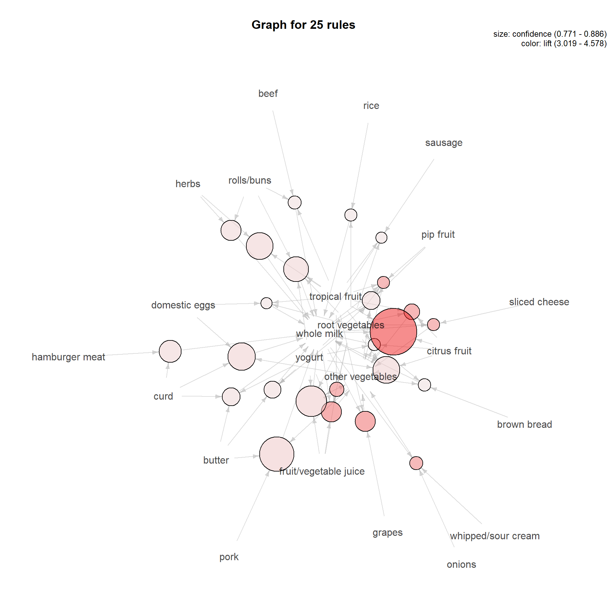

First we import arules and arulesViz package
library(arules)
library(arulesViz)We import the dataset as transactions
gr <- read.transactions('C:/Users/Alex/Downloads/groceries.csv',
format = 'basket',
sep = ',',
rm.duplicates = TRUE)
summary(gr)## transactions as itemMatrix in sparse format with
## 9835 rows (elements/itemsets/transactions) and
## 169 columns (items) and a density of 0.02609146
##
## most frequent items:
## whole milk other vegetables rolls/buns soda
## 2513 1903 1809 1715
## yogurt (Other)
## 1372 34055
##
## element (itemset/transaction) length distribution:
## sizes
## 1 2 3 4 5 6 7 8 9 10 11 12 13 14 15 16
## 2159 1643 1299 1005 855 645 545 438 350 246 182 117 78 77 55 46
## 17 18 19 20 21 22 23 24 26 27 28 29 32
## 29 14 14 9 11 4 6 1 1 1 1 3 1
##
## Min. 1st Qu. Median Mean 3rd Qu. Max.
## 1.000 2.000 3.000 4.409 6.000 32.000
##
## includes extended item information - examples:
## labels
## 1 abrasive cleaner
## 2 artif. sweetener
## 3 baby cosmeticsstr(gr)## Formal class 'transactions' [package "arules"] with 3 slots
## ..@ data :Formal class 'ngCMatrix' [package "Matrix"] with 5 slots
## .. .. ..@ i : int [1:43367] 29 88 118 132 33 157 167 166 38 91 ...
## .. .. ..@ p : int [1:9836] 0 4 7 8 12 16 21 22 27 28 ...
## .. .. ..@ Dim : int [1:2] 169 9835
## .. .. ..@ Dimnames:List of 2
## .. .. .. ..$ : NULL
## .. .. .. ..$ : NULL
## .. .. ..@ factors : list()
## ..@ itemInfo :'data.frame': 169 obs. of 1 variable:
## .. ..$ labels: chr [1:169] "abrasive cleaner" "artif. sweetener" "baby cosmetics" "baby food" ...
## ..@ itemsetInfo:'data.frame': 0 obs. of 0 variablesWe can use itemFrequencyPlot for visualise the item frequency.
itemFrequencyPlot(gr, topN = 50)We’ll use apriori algorithm with support=0.002 and confidence=0.5
rule <- apriori(gr, parameter = list(support=0.002, confidence=0.5))## Apriori
##
## Parameter specification:
## confidence minval smax arem aval originalSupport maxtime support minlen
## 0.5 0.1 1 none FALSE TRUE 5 0.002 1
## maxlen target ext
## 10 rules FALSE
##
## Algorithmic control:
## filter tree heap memopt load sort verbose
## 0.1 TRUE TRUE FALSE TRUE 2 TRUE
##
## Absolute minimum support count: 19
##
## set item appearances ...[0 item(s)] done [0.00s].
## set transactions ...[169 item(s), 9835 transaction(s)] done [0.00s].
## sorting and recoding items ... [147 item(s)] done [0.00s].
## creating transaction tree ... done [0.00s].
## checking subsets of size 1 2 3 4 5 done [0.00s].
## writing ... [1098 rule(s)] done [0.00s].
## creating S4 object ... done [0.00s].rule # We get 1098 rules## set of 1098 rulesinspect(head(sort(rule, by="lift"))) # View top 6 rules sorted according to Lift## lhs rhs support confidence lift count
## [1] {butter,
## hard cheese} => {whipped/sour cream} 0.002033554 0.5128205 7.154028 20
## [2] {beef,
## citrus fruit,
## other vegetables} => {root vegetables} 0.002135231 0.6363636 5.838280 21
## [3] {citrus fruit,
## other vegetables,
## tropical fruit,
## whole milk} => {root vegetables} 0.003152008 0.6326531 5.804238 31
## [4] {citrus fruit,
## frozen vegetables,
## other vegetables} => {root vegetables} 0.002033554 0.6250000 5.734025 20
## [5] {beef,
## other vegetables,
## tropical fruit} => {root vegetables} 0.002745297 0.6136364 5.629770 27
## [6] {bottled water,
## root vegetables,
## yogurt} => {tropical fruit} 0.002236909 0.5789474 5.517391 22plot(rule)## To reduce overplotting, jitter is added! Use jitter = 0 to prevent jitter.Ploting with method='grouped'
plot(rule, method='grouped')Ploting with method='graph' and since we have 1098 rules we’ll only plot top 25 rules for now (based on support, confidence and lift)
plot(rule, method='graph', control=list(max=25)) # based on support## Warning: plot: Too many rules supplied. Only plotting the best 25 rules using
## 'support' (change control parameter max if needed)plot(rule, method='graph', measure='confidence', control=list(max=25)) # based on confidence## Warning: plot: Too many rules supplied. Only plotting the best 25 rules using
## 'confidence' (change control parameter max if needed)
For analysing the rules more interactivly we’ll be using htmlwidget engine.
We can zoom-in & zoom-out of this figure and click on all the rules to understand them better
plot(rule, method='graph', measure='lift', engine='htmlwidget', control=list(max=50)) # based on lift## Warning: Too many rules supplied. Only plotting the best 50 rules using lift
## (change control parameter max if needed)Now we’ll try eliminating shorter rules by adding another parameter minlen
rule2 <- apriori(gr, parameter = list(support=0.002, confidence=0.5, minlen=4))## Apriori
##
## Parameter specification:
## confidence minval smax arem aval originalSupport maxtime support minlen
## 0.5 0.1 1 none FALSE TRUE 5 0.002 4
## maxlen target ext
## 10 rules FALSE
##
## Algorithmic control:
## filter tree heap memopt load sort verbose
## 0.1 TRUE TRUE FALSE TRUE 2 TRUE
##
## Absolute minimum support count: 19
##
## set item appearances ...[0 item(s)] done [0.00s].
## set transactions ...[169 item(s), 9835 transaction(s)] done [0.00s].
## sorting and recoding items ... [147 item(s)] done [0.00s].
## creating transaction tree ... done [0.00s].
## checking subsets of size 1 2 3 4 5 done [0.00s].
## writing ... [516 rule(s)] done [0.00s].
## creating S4 object ... done [0.00s].rule2 # we get 516 rules## set of 516 rulesinspect(head(sort(rule2, by="support"))) # View top 6 rules sorted according to Support## lhs rhs support confidence lift count
## [1] {other vegetables,
## root vegetables,
## yogurt} => {whole milk} 0.007829181 0.6062992 2.372842 77
## [2] {root vegetables,
## whole milk,
## yogurt} => {other vegetables} 0.007829181 0.5384615 2.782853 77
## [3] {other vegetables,
## tropical fruit,
## yogurt} => {whole milk} 0.007625826 0.6198347 2.425816 75
## [4] {tropical fruit,
## whole milk,
## yogurt} => {other vegetables} 0.007625826 0.5033557 2.601421 75
## [5] {other vegetables,
## root vegetables,
## tropical fruit} => {whole milk} 0.007015760 0.5702479 2.231750 69
## [6] {root vegetables,
## tropical fruit,
## whole milk} => {other vegetables} 0.007015760 0.5847458 3.022057 69plot(rule2, method="grouped") # plot using grouped methodplot(rule2, method="graph",
engine='htmlwidget',
measure='lift',
control=list(max=200)) # plot using graph method. (here we'll plot 200 rules)## Warning: Too many rules supplied. Only plotting the best 200 rules using lift
## (change control parameter max if needed)The reason for ploting almost 200 rules is to see as to what we are dealing with (you might think plotting 200 rules is a mess) and how we can tune the parameters & eliminate weaker rules.
We can just simply plot top 10 or 20 rules and focus on those rules but thats not what we’ll be looking at here.
Now that there are 516 rules after eliminating shorter rules, we can also try eliminating rules that are a subset of larger rules.
subset <- which(colSums(is.subset(rule2, rule2)) > 1)
rule2_rm <- rule2[-subset] # remove subsets
rule2_rm # we get 219 rules## set of 219 rulesinspect(head(sort(rule2_rm, by='lift'))) # view top 6 rules sorted by Lift values## lhs rhs support confidence lift count
## [1] {bottled water,
## root vegetables,
## yogurt} => {tropical fruit} 0.002236909 0.5789474 5.517391 22
## [2] {rolls/buns,
## tropical fruit,
## whipped/sour cream} => {yogurt} 0.002135231 0.6176471 4.427521 21
## [3] {citrus fruit,
## root vegetables,
## tropical fruit} => {other vegetables} 0.004473818 0.7857143 4.060694 44
## [4] {fruit/vegetable juice,
## root vegetables,
## tropical fruit} => {other vegetables} 0.002541942 0.7812500 4.037622 25
## [5] {butter,
## tropical fruit,
## whipped/sour cream} => {other vegetables} 0.002338587 0.7666667 3.962253 23
## [6] {root vegetables,
## tropical fruit,
## whipped/sour cream} => {other vegetables} 0.003355363 0.7333333 3.789981 33plot(rule2_rm, method="grouped") # grouped plotplot(rule2_rm, method="graph",
engine='htmlwidget',
control=list(max=220)) # graph plot with all the rulesI know the figure is a mess, but bear with me and zoom-in & click on ‘whole milk’.
If we look at the plot:
wholemilk_rules <- apriori(data=gr,
parameter=list (support=0.002,confidence = 0.08, minlen=4),
appearance = list (rhs="whole milk")) # this time we use confidence=0.08 for stronger rules## Apriori
##
## Parameter specification:
## confidence minval smax arem aval originalSupport maxtime support minlen
## 0.08 0.1 1 none FALSE TRUE 5 0.002 4
## maxlen target ext
## 10 rules FALSE
##
## Algorithmic control:
## filter tree heap memopt load sort verbose
## 0.1 TRUE TRUE FALSE TRUE 2 TRUE
##
## Absolute minimum support count: 19
##
## set item appearances ...[1 item(s)] done [0.00s].
## set transactions ...[169 item(s), 9835 transaction(s)] done [0.00s].
## sorting and recoding items ... [147 item(s)] done [0.00s].
## creating transaction tree ... done [0.00s].
## checking subsets of size 1 2 3 4 5 done [0.00s].
## writing ... [316 rule(s)] done [0.00s].
## creating S4 object ... done [0.00s].wholemilk_rules # we get 316 rules## set of 316 rulesplot(wholemilk_rules,
method="graph",
engine='htmlwidget',
control=list(max=320)) # graph plot of all the rules that lead to whole milkBy looking at the graph plot itself we can say there is a lot of rules for just one item(‘whole milk’). Same goes for items labelled as ‘other vegetables’.
Almost all the customers entering the store are buying ‘whole milk’ and ‘other vegetables’ no matter what other product they are buying. We can say ‘whole milk’ and ‘other vegetables’ are very common among customers. This can be confirmed when we generate rule4
What if, we want to focus on items that are a bit less frequent and ignore rules for very frequent items as mentioned above?
We can follow the below approach:
rule3 <- apriori(gr,
parameter = list(support=0.002, confidence=0.5, minlen=2),
appearance = list(items = c("other vegetables","whole milk"), default="both"))## Apriori
##
## Parameter specification:
## confidence minval smax arem aval originalSupport maxtime support minlen
## 0.5 0.1 1 none FALSE TRUE 5 0.002 2
## maxlen target ext
## 10 rules FALSE
##
## Algorithmic control:
## filter tree heap memopt load sort verbose
## 0.1 TRUE TRUE FALSE TRUE 2 TRUE
##
## Absolute minimum support count: 19
##
## set item appearances ...[2 item(s)] done [0.00s].
## set transactions ...[169 item(s), 9835 transaction(s)] done [0.00s].
## sorting and recoding items ... [147 item(s)] done [0.00s].
## creating transaction tree ... done [0.00s].
## checking subsets of size 1 2 3 4 5 done [0.00s].
## writing ... [66 rule(s)] done [0.00s].
## creating S4 object ... done [0.00s].rule3 # we get 66 rules## set of 66 rulesinspect(head(sort(rule3, by='lift'), n=10)) # View top 10 rules sorted by lift## lhs rhs support confidence lift count
## [1] {butter,
## hard cheese} => {whipped/sour cream} 0.002033554 0.5128205 7.154028 20
## [2] {beef,
## citrus fruit,
## other vegetables} => {root vegetables} 0.002135231 0.6363636 5.838280 21
## [3] {citrus fruit,
## other vegetables,
## tropical fruit,
## whole milk} => {root vegetables} 0.003152008 0.6326531 5.804238 31
## [4] {citrus fruit,
## frozen vegetables,
## other vegetables} => {root vegetables} 0.002033554 0.6250000 5.734025 20
## [5] {beef,
## other vegetables,
## tropical fruit} => {root vegetables} 0.002745297 0.6136364 5.629770 27
## [6] {bottled water,
## root vegetables,
## yogurt} => {tropical fruit} 0.002236909 0.5789474 5.517391 22
## [7] {herbs,
## other vegetables,
## whole milk} => {root vegetables} 0.002440264 0.6000000 5.504664 24
## [8] {grapes,
## pip fruit} => {tropical fruit} 0.002135231 0.5675676 5.408941 21
## [9] {herbs,
## yogurt} => {root vegetables} 0.002033554 0.5714286 5.242537 20
## [10] {beef,
## other vegetables,
## soda} => {root vegetables} 0.002033554 0.5714286 5.242537 20plot(rule3, method="grouped") # grouped plotplot(rule3,
method="graph",
engine='htmlwidget',
measure='lift',
control=list(max=20)) # graph plot with top 20 rules## Warning: Too many rules supplied. Only plotting the best 20 rules using lift
## (change control parameter max if needed)If we changed only the confidence parameter from 0.5 to .75 or even 0.8, the rules generated would only involve for ‘whole milk’ and ‘other vegetables’ as mentioned earlier.
rule4 <- apriori(gr,
parameter = list(support=0.002, confidence=0.75, minlen=2))## Apriori
##
## Parameter specification:
## confidence minval smax arem aval originalSupport maxtime support minlen
## 0.75 0.1 1 none FALSE TRUE 5 0.002 2
## maxlen target ext
## 10 rules FALSE
##
## Algorithmic control:
## filter tree heap memopt load sort verbose
## 0.1 TRUE TRUE FALSE TRUE 2 TRUE
##
## Absolute minimum support count: 19
##
## set item appearances ...[0 item(s)] done [0.00s].
## set transactions ...[169 item(s), 9835 transaction(s)] done [0.00s].
## sorting and recoding items ... [147 item(s)] done [0.00s].
## creating transaction tree ... done [0.00s].
## checking subsets of size 1 2 3 4 5 done [0.00s].
## writing ... [39 rule(s)] done [0.00s].
## creating S4 object ... done [0.00s].rule4 # we get 39 rules## set of 39 rulesinspect(head(sort(rule4, by='lift'), n=10)) # View top 10 rules sorted by lift## lhs rhs support confidence lift count
## [1] {citrus fruit,
## root vegetables,
## tropical fruit,
## whole milk} => {other vegetables} 0.003152008 0.8857143 4.577509 31
## [2] {grapes,
## tropical fruit,
## whole milk} => {other vegetables} 0.002033554 0.8000000 4.134524 20
## [3] {fruit/vegetable juice,
## root vegetables,
## whole milk,
## yogurt} => {other vegetables} 0.002033554 0.8000000 4.134524 20
## [4] {citrus fruit,
## root vegetables,
## tropical fruit} => {other vegetables} 0.004473818 0.7857143 4.060694 44
## [5] {fruit/vegetable juice,
## root vegetables,
## tropical fruit} => {other vegetables} 0.002541942 0.7812500 4.037622 25
## [6] {onions,
## whipped/sour cream,
## whole milk} => {other vegetables} 0.002135231 0.7777778 4.019677 21
## [7] {root vegetables,
## sliced cheese,
## whole milk} => {other vegetables} 0.002440264 0.7741935 4.001153 24
## [8] {pip fruit,
## root vegetables,
## tropical fruit,
## whole milk} => {other vegetables} 0.002440264 0.7741935 4.001153 24
## [9] {citrus fruit,
## frozen vegetables,
## root vegetables} => {other vegetables} 0.002033554 0.7692308 3.975504 20
## [10] {butter,
## tropical fruit,
## whipped/sour cream} => {other vegetables} 0.002338587 0.7666667 3.962253 23plot(rule4, method="grouped") # grouped plotTo conclude:
We cannot simply rely on highest values for support, confidence and lift.
Sometimes we need to eliminate rules for most frequent/popular items to get a better insight on items that are not and mainly focus on them.
END
Click on the next tab for Association Rules based on Book dataset